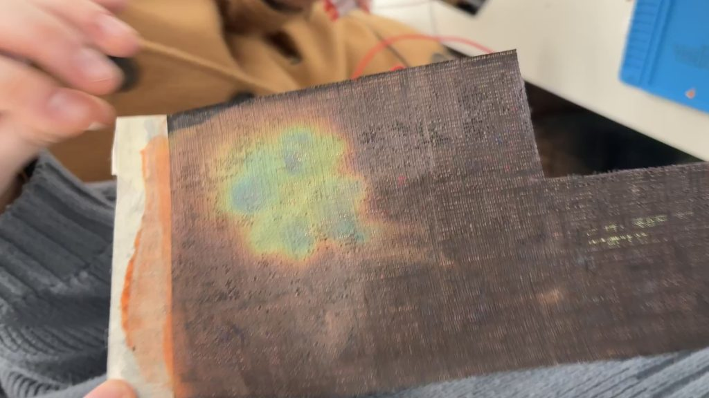
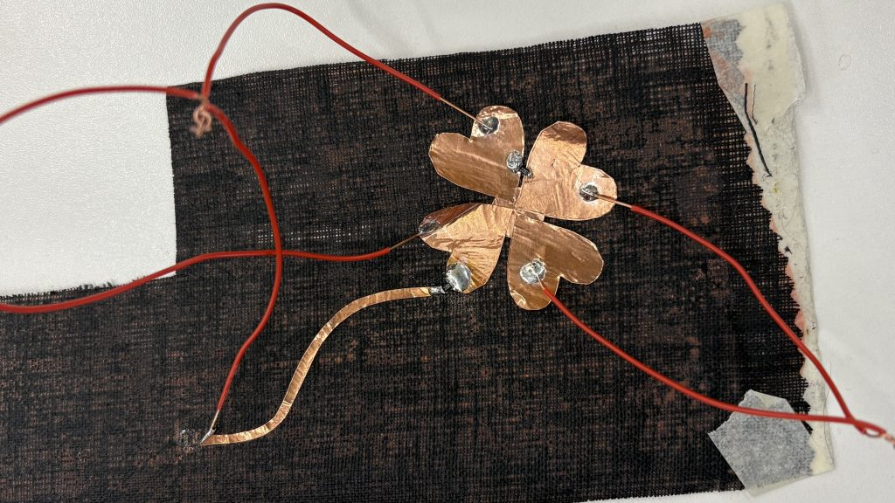

Topic:
Expanding the Four-Leaf Clover Circuit with Arduino Interactivity


What I learned:
This week, we built on the workshop led by Sara on smart materials. In class, our group created a four-leaf clover pattern using copper tape, shaped by cutting out four heart pieces and assembling them together along with a long stem. We attached this to a thermochromic fabric, which changes color when heated. The circuit included a resistor at the center of the clover, soldered to copper tape using wires, and when powered, the resistor heated up, transferring heat to the copper tape and revealing the clover pattern.
To expand this, I wanted to integrat an Arduino UNO and programmed a simple interactive feature. I connected a temperature sensor (NTC thermistor) to monitor the surrounding temperature. In my code, I will set a condition: the resistor only heats up when the temperature is below 20°C. This makes the four-leaf clover appear only in cooler environments, adding an element of environmental interactivity. I will also added an LED indicator: when the system is actively heating, the LED turns on to show that the circuit is live.
For the temperature sensing, I designed an interactive system that adds environmental responsiveness to the circuit. I will connect a 10K NTC thermistor to the Arduino as a temperature sensor. The idea was to make the heating circuit activate only when the surrounding temperature is below 20°C, adding a layer of context-aware behavior. I also going to integrat an LED indicator that lights up whenever the resistor is heating, giving clear feedback about the system’s status. I will also going to add a relay, if the current of the heater is relatively high, it is best to supply power to the heating circuit with an independent power source, and Arduino only controls the relay signal. This is because the heating resistor cannot be directly powered by Arduino, otherwise, it will be burned out, the relay is used to solve this problem.
Wiring Connections:
Thermistor Section:
- Connect one end of the thermistor to 5V.
- Connect the other end to A0 (analog input) and to a 10K resistor.
- Connect the other end of the 10K resistor to GND.
LED Indicator:
- Connect the long leg of the LED to Arduino’s D3 (through a 220Ω resistor).
- Connect the short leg of the LED to GND.
Relay Module:
- Connect the IN pin to Arduino’s D7.
- Connect VCC and GND to Arduino’s 5V and GND.
On the relay’s output side:
- Connect the Normally Open (NO) terminal to the positive side of the external heating element circuit.
- Connect the Common (COM) terminal to the positive side of the external power supply.
Arduino code：
const int tempPin = A0;//thermistor connected to A0
const int ledPin = 3; // LED connected D3
const int relayPin = 7; // relay connected to D7
// Thermal sensitivity parameters
const float BETA = 3950;
const float seriesResistor = 10000; // Voltage - dividing resistor
void setup() {
pinMode(ledPin, OUTPUT);
pinMode(relayPin, OUTPUT);
Serial.begin(9600);
}
void loop() {
int analogValue = analogRead(tempPin);
// Convert the input into temperature
float resistance = (1023.0 / analogValue - 1) * seriesResistor; // Convert the analog value into the resistance value (in ohms) of the thermistor
float temperature = 1.0 / (log(resistance / 10000) / BETA + 1.0 / 298.15) - 273.15; // Use the B-parameter formula to convert the resistance value into temperature (in degrees Celsius)
Serial.print("Temperature: ");
Serial.print(temperature);
Serial.println(" C");
if (temperature < 20.0) {
digitalWrite(relayPin, HIGH); // turn on heat
digitalWrite(ledPin, HIGH); // light up LED
} else {
digitalWrite(relayPin, LOW); // turn off heat
digitalWrite(ledPin, LOW); // turn off LED
}
delay(500); // update every 0.5 seconds
}Critical reflection:
Through this task, I learned how to combine basic physical circuits with microcontroller-based interactivity. I found it interesting how a simple resistive heating circuit can be made more dynamic and responsive by adding just a few components and writing a bit of code. The main challenge I faced was ensuring that the Arduino could safely control the heating element, because the resistor’s power draw is higher than what an Arduino pin can handle directly, I needed to add a relay module to safely switch the power to the resistor. This introduced me to the concept of interfacing high-power circuits with low-power microcontrollers.
Next steps:
Next, I want to improve the interactivity by making the system touch-responsive, utilizing a capacitive touch sensor to ensure that the clover shows only when someone touches the fabric. I would also like to explore with PWM control to gradually modify the heating strength, allowing the pattern to fade in and out more smoothly.